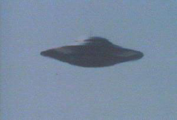
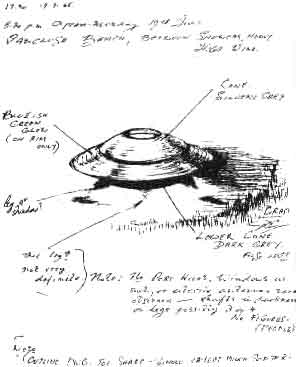
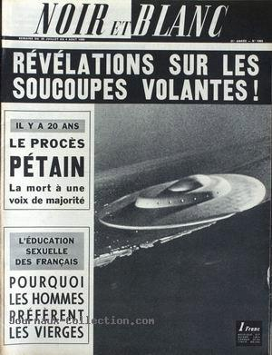

Dans l'Oklahoma, plusieurs voitures de policiers, appelés de
toutes parts, poursuivent des ovnis à évolutions avec changement de couleurs, observations que l'on tentera
d'expliquer par les étoiles Rigel, Capella et Aldébaran, qui étaient aux antipodes. Les policiers seront pourtant
ridiculisés par Hector V. Quintanilla et l'un d'eux perdra son poste et son épouse.
Paris-presse - l'intransigeant du 4 juillet, titrant sur Une étrange affaire de soucoupe
volante
Sur l'Ile Deception (Antarctique), des techniciens de plusieurs
bases observent pendant plusieurs heures un appareil gigantesque en forme de disque survolant l'île à haute altitude
avec des vitesses très variables. Photographié, l'objet perturbe des appareils de mesure du champ magnétique
terrestre. En plus des troupes britanniques stationnées sur l'île et du personnel de la base chilienne Pedro
Aguirre, des techniciens de la marine argentine rapportent eux aussi le passage au-dessus de leur navire d'un objet
lenticulaire de très grande taille. Le gouvernement de la république argentine émettra un communiqué officiel qui
confirme en tous points les rapports d'observations effectués par sa marine ainsi que ceux de 2 autres puissances
appartenant à des nationalités différentes. D'autres observations ont également été faites en juin, et des documents
déclassifiés attestent que la DIA était au courant.
Au-dessus de Clearwater (Floride), un pilote de l'USAF
largue volontairement depuis son Cessna 170-A 5 fusées éclairantes dans le but d'évaluer la qualité des témoignages
d'ovnis Vallée, J. & Hynek, J. A.: "Un canular de l'Air Force", Aux
limites de la réalité, p. 188.
La Montagne du 4 juillet, avec à sa une : Soucoupe volante ou hélicoptère : L'engin avait
la forme d'un ballon de rugby posé sur 4 pattes
A Kiel (Wisconsin), Mme E. R. Hayner observe une lumière scintillante, comme un satellite, durant Cas
Blue Book n° 9474 non résolu.
Un rapport d'un détachement argentin basé dans l'Antarctique
relayé par un communiqué officiel du ministère de la marine argentine décrit le gigantesque ovni observé pendant
plusieurs heures : Il avait l'apparence d'un matériau solide, rouge et vert, s'irisant de temps en temps de jaune,
de bleu, de blanc, et d'orangé. L'objet se déplaçait silencieusement vers l'est suivant une trajectoire sinueuse,
mais toujours sans bruit et à des vitesses variables. Il changea souvent de direction, mettant le cap tantôt vers
l'ouest, tantôt vers le nord. L'après-midi du même jour, le même objet fut repéré par la base des îles Orcades du
Sud. Il se déplaçait vers le nord-ouest, à un angle de 30° par rapport à l'horizon. Il était à une distance
approximative de 10 à 15 km. La base chilienne de l'Antarctique repéra aussi le même objet dans l'après-midi du même
jour. Le (?), un message d'une importance extrême nous parvint de la base des îles Orcades
du Sud. Alors qu'un étrange objet survolait la base, 2 variomètres, qui fonctionnaient parfaitement avant ce survol,
enregistrèrent des perturbations du champ magnétique sur leurs bandes.

Un des "vaisseaux pleiadiens" photographié par Billy MeierTrès probablement une maquette, Meier ayant été convaincu d'autres fraudes
Les révélations faites au docteur Rolf Alexander en été sont dévoilée, cette fois-ci en citant les
personnes concernées.
Survol de Mars à 9000 km par Mariner 4.
La ville de Buenos Aires est survolée pendant plus de . La presse fait largement état de cet événement en publiant des photographie. C'est toute une population
qui assistera aux évolutions "d'engins lumineux".

Dessin de Denis Crowe, illustrateur aéronautique professionnel, d'un véhicule en forme de disque
qu'il vit décoller de la plage de Vaucluse (Sidney)
Observation près de Sydney (New South Wales, Australie) par Denis
Crowe.
A Castalia (Ohio), M. D. Harris (astronome amateur, 16 ans) observe une étoile bleu brillant traverser 90° du
ciel durant Cas Blue Book n° 9550 non résolu.
A l'observatoire d'Ogre (Lettonie), les astronomes Robert et Esmeralda Vitolniek et
Yan Melderis voient un ovni vert et triangulaire ressemblant à une étoile. Examinant l'objet de plus près grâce
au télescope de l'observatoire, ils s'aperçoivent que l'ovni est composé de 3 boules vertes en formation
triangulaire autour d'une lumière centrale plus vaste. La sphère centrale est estimée à 90 m de diamètre et l'on
évaluera son altitude à 100 (200?) km, mais les observateurs seront dans l'incapacité de fournir une explication
à ce qu'il virent. L'observation aura duré 30 mn environ.
A Carazinho (Brésil), 5 petits êtres vêtus d'uniformes noirs et de petites bottes
apparaissent. Les témoins indiquent que l'un d'entre eux avait dans la main un objet étonnament lumineux,
comme une baguette magique.

Noir et Blanc n° 1065 du 29, titrant Révélations sur les soucoupes volantes !
À Paris, un homme habitant le 19ème arrondissement, près d'Aubervilliers, rentre chez lui et, par la fenêtre de son appartement, aperçoit un objet
volant dans le ciel. Il se saisit de son appareil photo Kodak Brownie Flash Camera Starluxe format 9 x 9 et prend,
en l'espace de 2 mn, 2 clichés qui feront la couverture d'un grand quotidien parisien. Aucune explication ne sera
donnée. Cependant, la forme de l'objet fait penser à celle d'un avion Lockheed SR-71A "Blackbird", volant depuis le 22 décembre 1964. Mais
qu'aurait fait un tel avion de reconnaissance stratégique de l'USAF à basse altitude au-dessus d'un pays allié à
?
Des formations d'ovnis sont signalées au-dessus de plusieurs états américains. L'USAF affirme que ces objets sont la planète Jupiter et les étoiles Bételgeuse, Aldébaran, Rigel
et Capella. Cette explication est par la suite refutée par Robert Risser, directeur du planétarium de la fondation
scientifique de l'Olkahoma, qui déclare : On ne pourrait être plus éloigné de la vérité. Apparemment, aucune
des étoiles mentionnées n'était visible aux USA à l'heure des visions.
Début d'une vague d'observation au Mexique Bland, John: "The
Summer of the Flying Saucers...", The Evening
Star de Ipswitch (Suffolk, UK), 15 octobre 1965.